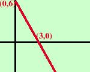
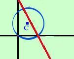

|
traccio la retta y = -2x + 6 diamo dei valori qualunque alla x e leggiamo i valori corrispondenti per la y mi conviene dare alla x il valore 0 e poi un valore abbastanza lontano, tipo 3  x y 0 6 3 0 Per tracciare la circonferenza trovo il centro ed il raggio 2x2+ 2y2 - 6x - 7y = 0 Metto la circonferenza in forma normale (divido ogni termine per 2) x2+ y2 - 3x - 7/2 y = 0 calcolo le coordinate del centro xo = -a/2 = 3/2 yo = -b/2 = 7/4 C(3/2 , 7/4) Calcolo poi il raggio r =  = = = Dalla figura posso individuare in modo grossolano le coordinate e controllare se i risultati sono compatibili con quelli della figura stessa |